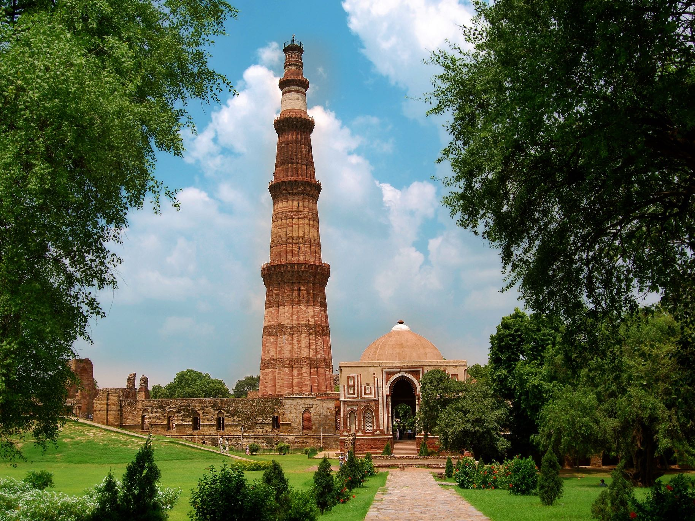

Red fort , Delhi

Overview
Located in Chandni Chowk Old Delhi, this red sandstone structure was constructed under the reign of Mughal emperor Shah Jahan for protection against invaders. It is known for its intricate Mughal architecture and floral designs.
Suggested Duration For Exploring :
Around 2 to 3 Hours
What To Expect?
Take a walk in the gardens, shop for souvenirs and handicrafts at Meena Bazaar, and explore the four museums inside the fort: Heritage Tea House, Diwan-i-Aam, Nahr-i-Bihisht and Rang Mahal.
Tips :
- Entry Fee is INR 35 for Indians and INR 500 for foreigners.
- Open from sunrise to sunset, except Mondays.
- Don’t forget to attend the evening sound and light show, screened 6pm onwards in both Hindi and English.
- Stroll through the maze-like roads of Chandni Chowk that surround the fort.
Overview :
This tourist destination stands out amidst Delhi's hustle and bustle with its tranquil surroundings created by its deep moat. A notable event at this site is the August 15th celebration of Indian independence where visitors can witness Prime Minister Modi hoist the national flag from its ramparts while delivering his speech. By visiting this fort, one can immerse themselves within Delhi's rich cultural heritage while experiencing breathtaking views from expansive courtyards complemented with intricate architectural details that showcase India's Mughal era distinctiveness. Anyone interested in exploring Delhi beyond modernity must visit this historic location.
Best Time to visit Red Fort
If you are looking for an optimal time to visit this tourist destination, then plan your trip between October and March when Delhi experiences its winter season. During this period, visitors can relish mild yet enjoyable temperatures conducive enough for wandering around the historic fort without discomfort or irritation. Winter weather typically stays cool (ranging between 8°C and 21°C) with dry conditions prevailing throughout the day; these elements allow tourists maximum exposure without them having to worry about heat exhaustion or muggy conditions.
Times for Visitors
- Opens: 9:30 AM
- Closes: - 4:30 PM
- Closed on: Mondays
- Night view timings: - 7:30 PM to 10:00 PM for light and sound show
Entry Fess :
- Indians: INR 35 + INR 25 per person for video filming
- Foreigner Tourists: INR 500 + INR 25 per person for video filming
- Adults (Light and Sound Show): INR 80 for weekends and INR 60 for weekdays
- Children (Light and Sound Show): INR 30 for weekends and INR 20 for weekdays
Gallery


Similar Destinations...
-
Taj Mahal

-
Red Fort
-
Hampi

-
Ellora Caves

-
Qutub Minar